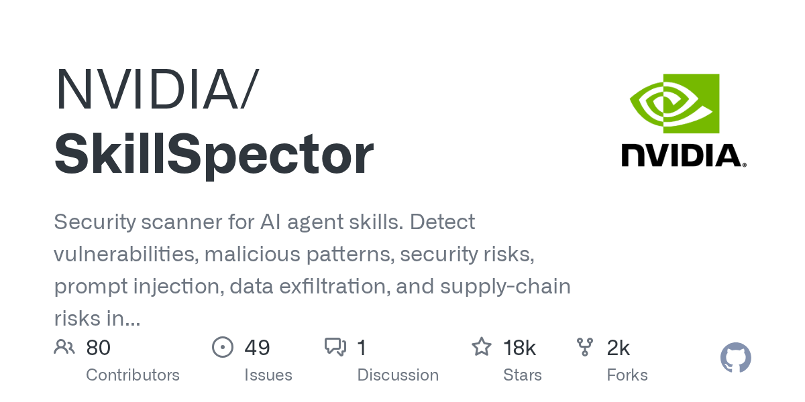
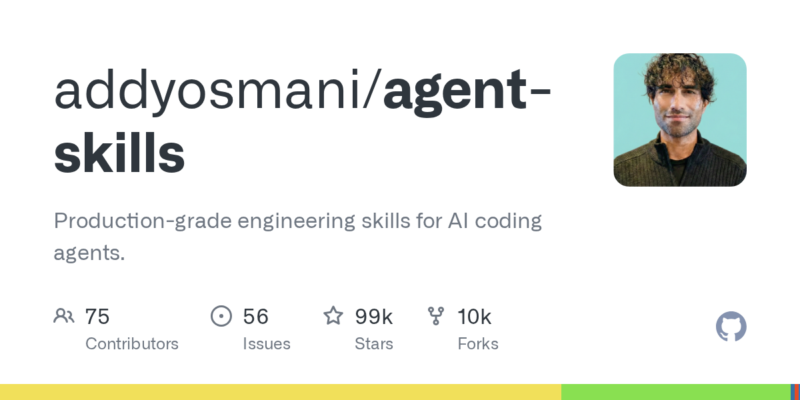
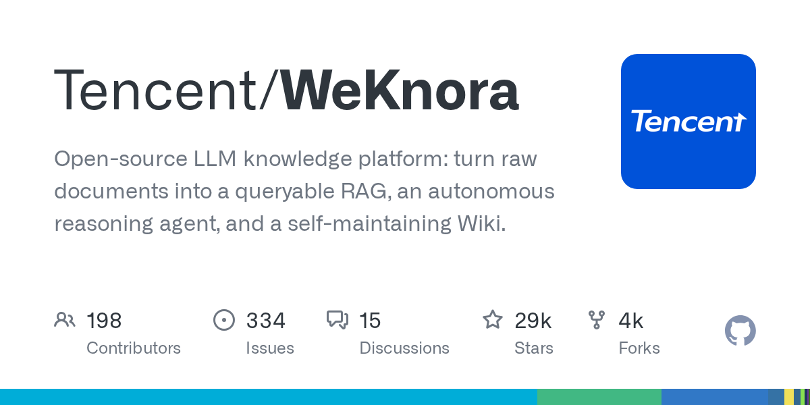

01 에이전트·툴링 이번 호 머리기사
설치 전 에이전트 스킬 보안 검사
NVIDIA/SkillSpector는 Claude Code, Codex, MCP용 스킬을 설치하기 전에 취약점과 악성 패턴을 검사하는 보안 도구다. 정적 분석을 기본으로 돌리고, 필요하면 LLM 평가를 더해 위험 점수와 보고서를 만든다.

Weekly GitHub Brief
이번 주 GitHub에서는 에이전트 도구가 ‘대화형 보조’에서 ‘업무 절차를 내장한 실행 도구’로 이동했다. 웹 검색과 본문 수집, 설치 전 보안 점검처럼 에이전트가 실제 작업 앞단과 뒷단을 맡는 저장소가 늘었고, 피드백으로 스스로 갱신하는 흐름도 보였다. 인프라 쪽에서는 로컬에서 모델 실행과 학습을 한 화면에 묶는 도구가 올라와, 사내에서 직접 돌리고 확인하는 방식이 더 쉬워졌다. 라이선스 경향은 명시된 정보가 적어 단정하기 어렵지만, 실무 적용을 겨냥한 도구형 저장소가 중심을 이뤘다. 사내에서는 먼저 에이전트 스킬 설치 전 보안 검사부터 시험해 볼 만하다.

Editor's Pick
01 에이전트·툴링 이번 호 머리기사
NVIDIA/SkillSpector는 Claude Code, Codex, MCP용 스킬을 설치하기 전에 취약점과 악성 패턴을 검사하는 보안 도구다. 정적 분석을 기본으로 돌리고, 필요하면 LLM 평가를 더해 위험 점수와 보고서를 만든다.

07 에이전트·툴링
“이 저장소는 단순 추론 서버가 아니다. 추론, 피드백 적격성 판단, 학습 작업, 버전 이력, 배포 면을 같은 체계에 넣었다.”
02 이번 주 급상승
“이 저장소는 코딩 보조를 더 똑똑하게 만드는 데서 멈추지 않고, 같은 절차를 반복하게 만드는 데 초점을 둔다.”
이번 주 가장 뜨거웠던 저장소 하나를 골랐습니다. 아래 섹션에도 그대로 실려 있습니다.
addyosmani/agent-skills
AI 코딩 보조가 개발 절차와 점검 규칙을 지키도록 돕는 스킬 모음이다.
“이 저장소는 코딩 보조를 더 똑똑하게 만드는 데서 멈추지 않고, 같은 절차를 반복하게 만드는 데 초점을 둔다. /build는 계획 승인 한 번 뒤에 작업을 자율 실행하지만, 각 작업은 여전히 테스트 중심으로 진행하고 실패나 위험 단계에서 멈춘다고 적혀 있다.”
★ 98,525이번 주 +3,711JavaScriptMIT 사내 사용 가능릴리스 0.6.10 (09.18)최근 활동 09.23AGENTS.md

지난 7일 동안 스타가 빠르게 늘었거나 새로 등장해 주목받는 저장소입니다.
addyosmani/agent-skills
AI 코딩 보조가 개발 절차와 점검 규칙을 지키도록 돕는 스킬 모음이다.
“이 저장소는 코딩 보조를 더 똑똑하게 만드는 데서 멈추지 않고, 같은 절차를 반복하게 만드는 데 초점을 둔다. /build는 계획 승인 한 번 뒤에 작업을 자율 실행하지만, 각 작업은 여전히 테스트 중심으로 진행하고 실패나 위험 단계에서 멈춘다고 적혀 있다.”
★ 98,525이번 주 +3,711JavaScriptMIT 사내 사용 가능릴리스 0.6.10 (09.18)최근 활동 09.23AGENTS.md
firecrawl/firecrawl
웹에서 자료를 찾고, 본문을 추출하고, 필요한 경우 페이지를 직접 조작해 결과를 돌려주는 웹 데이터 API다.
“이 서비스는 웹에서 자료를 찾고, 필요한 본문만 뽑아 정리된 형식으로 돌려준다. 사람이 브라우저 창을 여러 개 열어 검색하고 복사해 문서로 다듬던 일을 한 번에 줄여 준다. 검색, 수집, 화면 조작을 한 도구에서 처리한다.”
★ 183,521이번 주 +2,627TypeScriptAGPL-3.0 법무 확인릴리스 v2.11.0 (06.19)최근 활동 09.23예제AGENTS.md

Tencent/WeKnora
문서를 올리면 RAG(검색 증강 생성) 기반 질의응답, 에이전트, 위키 형태 지식베이스로 바꾸는 오픈소스 플랫폼이다.
“문서 검색 도구는 많지만, 이 저장소는 검색만이 아니라 지식 정리와 운영 기능까지 한데 묶는다. Feishu, GitLab, Notion, Yuque 같은 원천에서 자동 동기화를 지원하고, PDF·Word·이미지·Excel·XMind를 포함한 10개 이상 형식을 처리한다고 적혀 있다.”
★ 29,099이번 주 +4,870Go미표기 확인 필요릴리스 v0.8.0 (09.03)최근 활동 09.23테스트예제

이번 주 안에 정식 릴리스를 낸 프로젝트의 의미 있는 버전 변화입니다.
hummingbot/hummingbot
여러 중앙화·탈중앙화 거래소에서 자동매매 전략을 만들고 운영하게 돕는 오픈소스다.
“이 도구는 여러 거래소에서 자동매매 전략을 만들고 돌리게 돕는다. 사람이 시세창을 계속 보며 주문을 넣고 취소하던 일을 규칙으로 옮겨 반복 실행하게 만드는 성격이다. 모의 거래부터 실제 거래까지 같은 명령 체계로 다룬다.”
★ 20,165이번 주 +145PythonApache-2.0 사내 사용 가능릴리스 v2.17.0 (09.22)최근 활동 09.22테스트

zc6503204-collab/stock-strategy-dashboard
A주와 미국 주식 전략 연구, 모의거래, 보유 종목 알림을 한곳에서 다루는 로컬 도구다.
“A주와 미국 주식을 분리해 다룬다. 후보 종목, 기준 통화, 거래 시간, 보유 종목, 복기 기록이 서로 섞이지 않는다. 실제 주문은 넣지 않고 시세만 읽는다.”
★ 128이번 주 +47PythonMIT 사내 사용 가능릴리스 v0.1.0 (09.09)최근 활동 09.21테스트

에이전트 프레임워크, MCP 서버, 코딩 보조, LLM 앱 개발 도구입니다.
NVIDIA/SkillSpector
Claude Code, Codex, MCP용 스킬을 설치하기 전에 취약점과 악성 패턴을 검사하는 보안 도구다.
“이 저장소는 단순 문자열 검색기가 아니다. 빠른 정적 분석 뒤에 선택형 LLM 의미 평가를 붙이는 2단계 구조를 쓴다. 공급망 위험, 프롬프트 인젝션, 데이터 반출, 권한 상승, MCP 최소 권한, MCP 도구 오염까지 범위를 넓게 잡았다.”
★ 18,124이번 주 +783PythonApache-2.0 사내 사용 가능릴리스 v2.11.2 (09.09)최근 활동 09.23테스트
Human-Agent-Society/reef
에이전트가 응답 결과와 피드백을 받아 스스로 갱신되게 하는 인프라다.
“이 저장소는 단순 추론 서버가 아니다. 추론, 피드백 적격성 판단, 학습 작업, 버전 이력, 배포 면을 같은 체계에 넣었다. 만든 쪽은 모델 가중치를 다시 학습하는 방식과, 에이전트 하네스를 다듬는 방식을 둘 다 지원한다고 설명했다.”
★ 4,162이번 주 +2,182PythonApache-2.0 사내 사용 가능릴리스 v0.1.0 (09.23)최근 활동 09.23테스트AGENTS.md

추론 서빙, 런타임, 양자화, GPU 커널, 벡터 DB 등 모델을 돌리는 바탕입니다.
unslothai/unsloth
로컬 PC에서 대규모 언어 모델과 확산 모델을 실행하고 학습할 수 있게 만든 도구다.
“Unsloth는 데스크톱 앱, 웹 화면, 코드 방식 세 가지 형태를 제공한다. 로컬 모델을 OpenAI 호환 API로 내보낼 수 있고, Claude Code, Codex, MCP와도 연결할 수 있다.”
★ 76,604이번 주 +394PythonApache-2.0 사내 사용 가능릴리스 v0.1.814-beta (09.22)최근 활동 09.23테스트